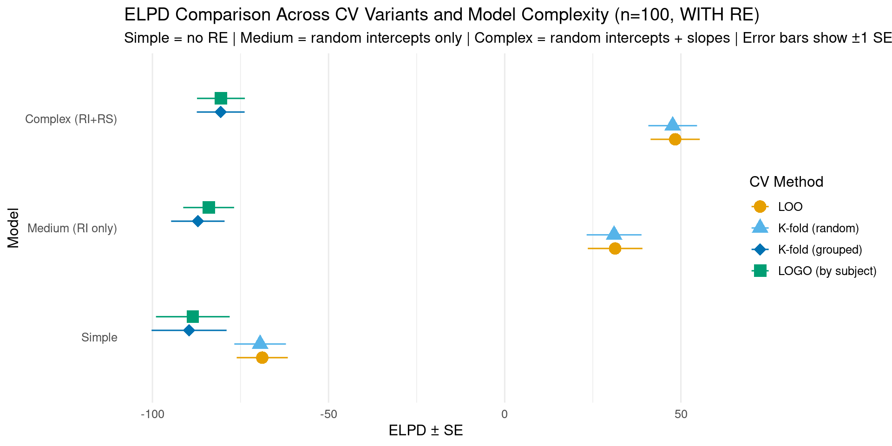

Bayesian Mixed Effects Models with brms for Linguists
Author
Workshop Materials
Published
December 17, 2025
1 LOO-PSIS: Leave-One-Out Cross-Validation
LOO-PSIS (Leave-One-Out Cross-Validation with Pareto-Smoothed Importance Sampling) helps answer: Which model predicts new data better?
1.1 Why Use LOO Instead of Prior Comparison?
These approaches answer different questions:
Prior comparison (what we did earlier):
Shows if posterior coefficient estimates and effect sizes are sensitive to prior choice
Good for: reporting robustness of conclusions
Question: “Do my results depend on my priors?”
LOO comparison (this approach):
Shows which model predicts better
Good for: feature selection, model building
Question: “Which model structure produces better predictions?”
Can compare:
Different priors (e.g., narrow/regularizing vs. wide priors)
Different likelihoods (e.g., normal vs. lognormal)
Different model structures (e.g., with/without random slopes)
You can do both:
First: Compare different priors within same model structure (sensitivity analysis)
Then: Use LOO to compare different model structures with best priors (model selection)
1.2 Why Use LOO Instead of Bayes Factors?
LOO advantages:
Priors less important because we evaluate predictive performance on new data
Number of samples less important - most uncertainty comes from the data itself
More stable and interpretable
Bayes factors:
Very sensitive to prior choice
Sensitive to number of samples
Harder to interpret (what does BF = 3.2 mean?)
1.3 Setup
Show code
# Configure backend BEFORE loading brmsif (requireNamespace("cmdstanr", quietly =TRUE)) {tryCatch({ cmdstanr::cmdstan_path()options(brms.backend ="cmdstanr") }, error =function(e) {options(brms.backend ="rstan") })}library(brms)library(tidyverse)library(bayesplot)library(posterior)library(loo)library(patchwork)# Set seed for reproducibilityset.seed(42)
1.4 Create Four Test Datasets
We’ll create four datasets to test how LOO behaves under different conditions:
Show code
# Ensure tidyverse is loaded for pipe operatorlibrary(dplyr)# Helper function to generate RT datagenerate_rt_data <-function(n_obs, with_random_effects =TRUE, seed =42) {set.seed(seed)# Determine number of subjects and items (ensure at least 2 for factors) n_subj <-max(5, min(10, ceiling(n_obs /8))) n_items <-max(5, min(10, ceiling(n_obs /8)))# Create base structure ensuring balanced conditions n_per_cond <-ceiling(n_obs /2) data <- dplyr::bind_rows(expand.grid(subject =1:n_subj,item =1:n_items,condition ="A" ) %>% dplyr::slice(1:n_per_cond),expand.grid(subject =1:n_subj,item =1:n_items,condition ="B" ) %>% dplyr::slice(1:(n_obs - n_per_cond)) ) %>% dplyr::mutate(subject =factor(subject),item =factor(item),condition =factor(condition) )if (with_random_effects) {# Generate data WITH true random effects (STRONGER effects for clear demonstration) subj_intercept <-rnorm(n_subj, 0, 0.4) # Increased from 0.2 subj_slope <-rnorm(n_subj, 0, 0.2) # Increased from 0.1 item_intercept <-rnorm(n_items, 0, 0.3) # Increased from 0.15 data <- data %>% dplyr::mutate(re_subject_int = subj_intercept[as.numeric(subject)],re_subject_slope = subj_slope[as.numeric(subject)] * (condition =="B"),re_item = item_intercept[as.numeric(item)],log_rt =6+0.15* (condition =="B") + re_subject_int + re_subject_slope + re_item +rnorm(n(), 0, 0.15), # Reduced residual noise from 0.2rt =exp(log_rt) ) %>% dplyr::select(subject, item, condition, log_rt, rt) } else {# Generate data WITHOUT random effects (pure fixed effect + noise) data <- data %>% dplyr::mutate(log_rt =6+0.15* (condition =="B") +rnorm(n(), 0, 0.4), # Increased noisert =exp(log_rt) ) }return(data)}# Generate four datasetsrt_data_100_with <-generate_rt_data(100, with_random_effects =TRUE, seed =123)rt_data_100_without <-generate_rt_data(100, with_random_effects =FALSE, seed =124)rt_data_40_with <-generate_rt_data(40, with_random_effects =TRUE, seed =125)rt_data_40_without <-generate_rt_data(40, with_random_effects =FALSE, seed =126)# Create summary tabledata_summaries <-data.frame(Scenario =c("n=100, WITH RE", "n=100, WITHOUT RE", "n=40, WITH RE", "n=40, WITHOUT RE"),N =c(nrow(rt_data_100_with), nrow(rt_data_100_without), nrow(rt_data_40_with), nrow(rt_data_40_without)),Mean_logRT =c(round(mean(rt_data_100_with$log_rt), 2),round(mean(rt_data_100_without$log_rt), 2),round(mean(rt_data_40_with$log_rt), 2),round(mean(rt_data_40_without$log_rt), 2) ),SD_logRT =c(round(sd(rt_data_100_with$log_rt), 3),round(sd(rt_data_100_without$log_rt), 3),round(sd(rt_data_40_with$log_rt), 3),round(sd(rt_data_40_without$log_rt), 3) ),True_Structure =c("Random slopes + intercepts", "Fixed effect only","Random slopes + intercepts", "Fixed effect only"))knitr::kable(data_summaries,caption ="Four Test Datasets: 2×2 Design (Sample Size × Data Structure)",col.names =c("Scenario", "N", "Mean log-RT", "SD log-RT", "True Data Structure"),align =c("l", "r", "r", "r", "l"))
Four Test Datasets: 2×2 Design (Sample Size × Data Structure)
Scenario
N
Mean log-RT
SD log-RT
True Data Structure
n=100, WITH RE
100
5.91
0.478
Random slopes + intercepts
n=100, WITHOUT RE
100
6.08
0.366
Fixed effect only
n=40, WITH RE
40
6.37
0.377
Random slopes + intercepts
n=40, WITHOUT RE
40
5.98
0.296
Fixed effect only
1.5 Fit Models for All Four Scenarios
For each dataset, we’ll fit two models:
Simple model: No random effects (just fixed effects) - log_rt ~ condition
Complex model: Random slopes for subjects - (1 + condition | subject) + (1 | item)
Show code
# Ensure brms is loadedlibrary(brms)# Define priors# Simple model: no random effects, just fixed effects + residualrt_priors_simple <-c(prior(normal(6, 1.5), class = Intercept, lb =4),prior(normal(0, 0.5), class = b),prior(exponential(1), class = sigma))# Medium model: random intercepts only (no correlation)rt_priors_medium <-c(prior(normal(6, 1.5), class = Intercept, lb =4),prior(normal(0, 0.5), class = b),prior(exponential(1), class = sigma),prior(exponential(1), class = sd))# Complex model: includes random effects with correlationrt_priors_complex <-c(prior(normal(6, 1.5), class = Intercept, lb =4),prior(normal(0, 0.5), class = b),prior(exponential(1), class = sigma),prior(exponential(1), class = sd),prior(lkj(2), class = cor))# Create fits directorydir.create("fits", showWarnings =FALSE, recursive =TRUE)# Helper function to fit or load modelsfit_or_load <-function(model_name, formula, data, priors) { filepath <-paste0("fits/", model_name, ".rds")if (file.exists(filepath)) {readRDS(filepath) } else { fit <-brm(formula = formula,data = data,family =gaussian(),prior = priors,chains =4,iter =2000,cores =4,backend ="cmdstanr",seed =1234,refresh =0 )saveRDS(fit, filepath) fit }}# Scenario 1: n=100, WITH random effectsfit_simple_100_with <-fit_or_load("fit_simple_100_with", log_rt ~ condition, rt_data_100_with, rt_priors_simple)fit_medium_100_with <-fit_or_load("fit_medium_100_with", log_rt ~ condition + (1| subject) + (1| item), rt_data_100_with, rt_priors_medium)fit_complex_100_with <-fit_or_load("fit_complex_100_with", log_rt ~ condition + (1+ condition | subject) + (1| item), rt_data_100_with, rt_priors_complex)# Scenario 2: n=100, WITHOUT random effectsfit_simple_100_without <-fit_or_load("fit_simple_100_without", log_rt ~ condition, rt_data_100_without, rt_priors_simple)fit_complex_100_without <-fit_or_load("fit_complex_100_without", log_rt ~ condition + (1+ condition | subject) + (1| item), rt_data_100_without, rt_priors_complex)# Scenario 3: n=40, WITH random effectsfit_simple_40_with <-fit_or_load("fit_simple_40_with", log_rt ~ condition, rt_data_40_with, rt_priors_simple)fit_complex_40_with <-fit_or_load("fit_complex_40_with", log_rt ~ condition + (1+ condition | subject) + (1| item), rt_data_40_with, rt_priors_complex)# Scenario 4: n=40, WITHOUT random effectsfit_simple_40_without <-fit_or_load("fit_simple_40_without", log_rt ~ condition, rt_data_40_without, rt_priors_simple)fit_complex_40_without <-fit_or_load("fit_complex_40_without", log_rt ~ condition + (1+ condition | subject) + (1| item), rt_data_40_without, rt_priors_complex)
2 Comparing Models with LOO Across Four Scenarios
2.1 Add LOO Criterion to All Models
Show code
# Add LOO criterion to all modelsfit_simple_100_with <-add_criterion(fit_simple_100_with, "loo")fit_medium_100_with <-add_criterion(fit_medium_100_with, "loo")fit_complex_100_with <-add_criterion(fit_complex_100_with, "loo")fit_simple_100_without <-add_criterion(fit_simple_100_without, "loo")fit_complex_100_without <-add_criterion(fit_complex_100_without, "loo")fit_simple_40_with <-add_criterion(fit_simple_40_with, "loo")fit_complex_40_with <-add_criterion(fit_complex_40_with, "loo")fit_simple_40_without <-add_criterion(fit_simple_40_without, "loo")fit_complex_40_without <-add_criterion(fit_complex_40_without, "loo")# Display individual LOO results showing progression of model complexityprint("Example: Individual LOO output for simple model (n=100, WITH RE)")
[1] "Example: Individual LOO output for simple model (n=100, WITH RE)"
Show code
print(fit_simple_100_with$criteria$loo)
Computed from 4000 by 100 log-likelihood matrix.
Estimate SE
elpd_loo -68.8 7.3
p_loo 2.9 0.5
looic 137.7 14.5
------
MCSE of elpd_loo is 0.0.
MCSE and ESS estimates assume MCMC draws (r_eff in [0.7, 1.0]).
All Pareto k estimates are good (k < 0.7).
See help('pareto-k-diagnostic') for details.
Show code
print("Example: Individual LOO output for medium model (n=100, WITH RE)")
[1] "Example: Individual LOO output for medium model (n=100, WITH RE)"
Show code
print(fit_medium_100_with$criteria$loo)
Computed from 4000 by 100 log-likelihood matrix.
Estimate SE
elpd_loo 31.3 7.8
p_loo 15.1 2.2
looic -62.7 15.5
------
MCSE of elpd_loo is 0.1.
MCSE and ESS estimates assume MCMC draws (r_eff in [0.5, 1.2]).
All Pareto k estimates are good (k < 0.7).
See help('pareto-k-diagnostic') for details.
Show code
print("Example: Individual LOO output for complex model (n=100, WITH RE)")
[1] "Example: Individual LOO output for complex model (n=100, WITH RE)"
Show code
print(fit_complex_100_with$criteria$loo)
Computed from 4000 by 100 log-likelihood matrix.
Estimate SE
elpd_loo 48.4 7.0
p_loo 21.6 2.6
looic -96.8 14.0
------
MCSE of elpd_loo is NA.
MCSE and ESS estimates assume MCMC draws (r_eff in [0.6, 1.4]).
Pareto k diagnostic values:
Count Pct. Min. ESS
(-Inf, 0.7] (good) 99 99.0% 573
(0.7, 1] (bad) 1 1.0% <NA>
(1, Inf) (very bad) 0 0.0% <NA>
See help('pareto-k-diagnostic') for details.
Understanding individual LOO output:
Estimate: The ELPD (higher = better predictive accuracy)
SE: Standard error of the estimate (uncertainty)
p_loo: Effective number of parameters (how much the model “uses” the data)
looic: -2 × elpd_loo (lower = better, analogous to AIC)
Pareto k diagnostic: Checks reliability of the LOO approximation
All k < 0.5: Excellent
k < 0.7: Good
k > 0.7: Problematic (may need reloo = TRUE)
2.2 Compare Models for Each Scenario
Show code
# Compare models for each scenarioloo_comp_100_with <-loo_compare(fit_simple_100_with, fit_complex_100_with)loo_comp_100_without <-loo_compare(fit_simple_100_without, fit_complex_100_without)loo_comp_40_with <-loo_compare(fit_simple_40_with, fit_complex_40_with)loo_comp_40_without <-loo_compare(fit_simple_40_without, fit_complex_40_without)# Show all columns including p_looprint("\nFull comparison with p_loo values:")
The loo_compare() output shows (note: by default only some columns are printed):
Default output:
elpd_diff: Difference from best model (0 for winner, negative for others)
se_diff: Standard error of the difference (uncertainty in comparison)
Full output (with simplify = FALSE):
elpd_loo: Expected log pointwise predictive density (higher = better predictions)
se_elpd_loo: Standard error of elpd_loo
p_loo: Effective number of parameters - this shows model complexity!
Simple model: p_loo ≈ number of fixed effects + 1 (for sigma)
Complex model: p_loo increases with random effects (subjects, items, correlations)
Key: Higher p_loo = more complex model, but also better fit if it wins
looic: LOO Information Criterion = -2 × elpd_loo (lower = better, like AIC/BIC)
Why p_loo matters: It shows you’re not just comparing predictive accuracy, but accuracy adjusted for complexity. The complex model has higher p_loo (uses more parameters), so it needs to predict substantially better to win.
Key insight: The ratio (|elpd_diff| / se_diff) tells you how many standard errors separate the models. A ratio > 4 indicates strong evidence for the winning model.
Expected: We marginalize over all possible future data
Log: Works on log scale for numerical stability
Pointwise: Evaluated separately for each data point
Predictive Density: How well the model predicts new data
Key properties:
Higher is better (like R² in frequentist stats)
Difference matters: Which model predicts new data better?
Not about fit to current data: About generalization
Takes into account the uncertainty of predictions
2.2.3 Ratio
The ratio (|ELPD_diff| / SE) tells us how many standard errors separate the models. Here’s a detailed breakdown:
Show code
# Extract detailed ratio information for both models in each scenarioratio_details <-data.frame()scenarios_list <-list(list(comp = loo_comp_100_with, name ="n=100, WITH RE"),list(comp = loo_comp_100_without, name ="n=100, WITHOUT RE"),list(comp = loo_comp_40_with, name ="n=40, WITH RE"),list(comp = loo_comp_40_without, name ="n=40, WITHOUT RE"))for (scenario in scenarios_list) { comp <- scenario$compfor (i in1:nrow(comp)) { model_name <-rownames(comp)[i] model_clean <- tools::toTitleCase(gsub("fit_|_.*", "", model_name)) elpd <- comp[i, "elpd_loo"] se_elpd <- comp[i, "se_elpd_loo"] elpd_diff <- comp[i, "elpd_diff"] se_diff <- comp[i, "se_diff"]if (i ==1) {# Best model ratio <-NA interpretation <-"Best model (reference)" } else { ratio <-abs(elpd_diff) / se_diffif (ratio <1) { interpretation <-"Essentially equivalent" } elseif (ratio <2) { interpretation <-"Weak evidence" } elseif (ratio <4) { interpretation <-"Moderate evidence" } elseif (ratio <10) { interpretation <-"Strong evidence" } else { interpretation <-"Very strong evidence" } } ratio_details <-rbind(ratio_details, data.frame(Scenario = scenario$name,Model = model_clean,ELPD =round(elpd, 1),SE_ELPD =round(se_elpd, 1),ELPD_diff =ifelse(i ==1, "—", as.character(round(elpd_diff, 2))),SE_diff =ifelse(i ==1, "—", as.character(round(se_diff, 2))),Ratio =ifelse(i ==1, "—", as.character(round(ratio, 2))),Interpretation = interpretation )) }}knitr::kable(ratio_details,caption ="Detailed Model Comparison with Ratios (|ELPD_diff| / SE)",col.names =c("Scenario", "Model", "ELPD", "SE", "ELPD Δ", "SE Δ", "Ratio (SE)", "Interpretation"),align =c("l", "l", "r", "r", "r", "r", "r", "l"),row.names =FALSE)
Detailed Model Comparison with Ratios (|ELPD_diff| / SE)
Scenario
Model
ELPD
SE
ELPD Δ
SE Δ
Ratio (SE)
Interpretation
n=100, WITH RE
Complex
48.4
7.0
—
—
—
Best model (reference)
n=100, WITH RE
Simple
-68.8
7.3
-117.21
9.25
12.68
Very strong evidence
n=100, WITHOUT RE
Simple
-40.2
7.0
—
—
—
Best model (reference)
n=100, WITHOUT RE
Complex
-42.4
7.2
-2.15
1.35
1.59
Weak evidence
n=40, WITH RE
Complex
5.9
4.5
—
—
—
Best model (reference)
n=40, WITH RE
Simple
-20.1
4.2
-26.06
4.44
5.87
Strong evidence
n=40, WITHOUT RE
Simple
-10.4
3.9
—
—
—
Best model (reference)
n=40, WITHOUT RE
Complex
-12.1
4.3
-1.62
2.02
0.8
Essentially equivalent
2.3 Rule of Thumb for Model Comparison
Interpreting elpd_diff (expected log pointwise predictive density difference):
elpd_diff
Ratio*
Interpretation
Action
< 4
< 2
Equivalent models
Pick simpler one
4-10
2-4
Moderate difference
Consider larger elpd
> 10
> 4
Clear winner
Prefer larger elpd
*Ratio = |elpd_diff| / se_diff (how many standard errors apart?)
2.4 Visualizations: Side-by-Side Comparisons
2.4.1 Plot 1: ELPD Comparison (2×2 Grid)
Show code
# Helper function to create ELPD plot for one scenarioplot_elpd_comparison <-function(loo_comp, scenario_name) { loo_df <-as.data.frame(loo_comp) %>%rownames_to_column("model") %>%mutate(model_clean = tools::toTitleCase(gsub("fit_|_.*", "", model)),is_winner =row_number() ==1 )ggplot(loo_df, aes(x = elpd_loo, y = model_clean, color = is_winner)) +geom_pointrange(aes(xmin = elpd_loo - se_elpd_loo, xmax = elpd_loo + se_elpd_loo),size =1.2 ) +scale_color_manual(values =c("FALSE"="gray60", "TRUE"="#E69F00")) +labs(title = scenario_name,x ="ELPD ± SE",y =NULL ) +theme_minimal(base_size =10) +theme(axis.ticks.y =element_blank(),panel.grid.major.y =element_blank(),legend.position ="none" )}# Create four plotsp1 <-plot_elpd_comparison(loo_comp_100_with, "n=100, WITH RE")p2 <-plot_elpd_comparison(loo_comp_100_without, "n=100, WITHOUT RE")p3 <-plot_elpd_comparison(loo_comp_40_with, "n=40, WITH RE")p4 <-plot_elpd_comparison(loo_comp_40_without, "n=40, WITHOUT RE")# Combine in 2×2 grid(p1 + p2) / (p3 + p4) +plot_annotation(title ="ELPD Comparison Across Four Scenarios",subtitle ="Orange = Winner | Gray = Loser | Error bars show ±1 SE" )
2.4.2 Plot 2: Pointwise ELPD Differences by RT (2×2 Grid)
Show code
# Helper function to plot pointwise ELPD differencesplot_elpd_differences <-function(fit_simple, fit_complex, data, scenario_name) { diff_data <- data %>%mutate(diff_elpd = fit_complex$criteria$loo$pointwise[, "elpd_loo"] - fit_simple$criteria$loo$pointwise[, "elpd_loo"],rt_category =case_when( rt <quantile(rt, 0.25) ~"Fast", rt >quantile(rt, 0.75) ~"Slow",TRUE~"Medium" ),rt_category =factor(rt_category, levels =c("Fast", "Medium", "Slow")) )ggplot(diff_data, aes(x = rt, y = diff_elpd, color = rt_category)) +geom_hline(yintercept =0, linetype ="dashed", color ="gray50") +geom_point(alpha =0.5, size =1.5) +scale_color_manual(values =c("Fast"="#009E73", "Medium"="#56B4E9", "Slow"="#E69F00"),name ="RT" ) +labs(title = scenario_name,x ="RT (ms)",y ="ELPD Diff\n(Complex - Simple)" ) +theme_minimal(base_size =10) +theme(legend.position ="none")}# Create four plotsp1 <-plot_elpd_differences(fit_simple_100_with, fit_complex_100_with, rt_data_100_with, "n=100, WITH RE")p2 <-plot_elpd_differences(fit_simple_100_without, fit_complex_100_without, rt_data_100_without, "n=100, WITHOUT RE")p3 <-plot_elpd_differences(fit_simple_40_with, fit_complex_40_with, rt_data_40_with, "n=40, WITH RE")p4 <-plot_elpd_differences(fit_simple_40_without, fit_complex_40_without, rt_data_40_without, "n=40, WITHOUT RE")# Combine in 2×2 grid(p1 + p2) / (p3 + p4) +plot_annotation(title ="Pointwise ELPD Differences: Complex vs Simple Model",subtitle ="Positive = Complex better | Negative = Simple better | Line at zero" )
What to look for:
WITH RE scenarios: Positive values (complex better) when data truly has random slopes
WITHOUT RE scenarios: Near zero or negative values (simple better or equivalent)
Sample size effect: More scatter with n=40, clearer pattern with n=100
2.4.3 Plot 3: Model Weights (2×2 Grid)
Model weights represent the probability that each model would make the best predictions for new data, based on the LOO estimates. Weights close to 1.0 indicate strong confidence in that model, while weights near 0.5 suggest the models are roughly equivalent in predictive performance.
Show code
# Helper function to plot model weightsplot_model_weights <-function(fit_simple, fit_complex, scenario_name) { weights <-model_weights(fit_simple, fit_complex, weights ="loo") weights_df <-data.frame(Model =c("Simple", "Complex"),Weight =as.numeric(weights) )ggplot(weights_df, aes(x = Model, y = Weight, fill = Model)) +geom_col(width =0.6) +geom_text(aes(label =round(Weight, 3)), vjust =-0.5, size =3.5) +scale_fill_manual(values =c("Simple"="#56B4E9", "Complex"="#E69F00")) +scale_y_continuous(limits =c(0, 1), breaks =seq(0, 1, 0.2)) +labs(title = scenario_name,x =NULL,y ="Weight" ) +theme_minimal(base_size =10) +theme(legend.position ="none")}# Create four plotsp1 <-plot_model_weights(fit_simple_100_with, fit_complex_100_with, "n=100, WITH RE")p2 <-plot_model_weights(fit_simple_100_without, fit_complex_100_without, "n=100, WITHOUT RE")p3 <-plot_model_weights(fit_simple_40_with, fit_complex_40_with, "n=40, WITH RE")p4 <-plot_model_weights(fit_simple_40_without, fit_complex_40_without, "n=40, WITHOUT RE")# Combine in 2×2 grid(p1 + p2) / (p3 + p4) +plot_annotation(title ="Model Weights: How Confident is LOO in Model Selection?",subtitle ="Weight ≈ 1.0 = Very confident | Weights ≈ 0.5 = Uncertain" )
2.4.4 Plot 4: Pareto k Diagnostics (2×2 Grid)
Pareto k values diagnose the reliability of the LOO approximation for each observation, with values below 0.7 indicating trustworthy estimates. High k values (> 0.7) suggest influential observations where the importance sampling approximation may be unreliable, requiring exact leave-one-out refitting with reloo = TRUE.
Show code
# Helper function to plot Pareto k valuesplot_pareto_k <-function(fit_complex, scenario_name) { k_values <- fit_complex$criteria$loo$diagnostics$pareto_k k_df <-data.frame(observation =1:length(k_values),pareto_k = k_values,problematic = k_values >0.7 )ggplot(k_df, aes(x = observation, y = pareto_k, color = problematic)) +geom_point(alpha =0.6, size =1.5) +geom_hline(yintercept =0.5, linetype ="dashed", color ="orange", alpha =0.7) +geom_hline(yintercept =0.7, linetype ="dashed", color ="red", alpha =0.7) +scale_color_manual(values =c("FALSE"="#56B4E9", "TRUE"="#E69F00")) +labs(title = scenario_name,x ="Observation",y ="Pareto k" ) +theme_minimal(base_size =10) +theme(legend.position ="none")}# Create four plots (use complex model for diagnostics)p1 <-plot_pareto_k(fit_complex_100_with, "n=100, WITH RE")p2 <-plot_pareto_k(fit_complex_100_without, "n=100, WITHOUT RE")p3 <-plot_pareto_k(fit_complex_40_with, "n=40, WITH RE")p4 <-plot_pareto_k(fit_complex_40_without, "n=40, WITHOUT RE")# Combine in 2×2 grid(p1 + p2) / (p3 + p4) +plot_annotation(title ="Pareto k Diagnostics for Complex Model",subtitle ="k < 0.5 (good) | k < 0.7 (ok) | k > 0.7 (problematic)" )
2.5 Key Insights from Four Scenarios
Show code
# Summarize key findingsinsights_df <-data.frame(Scenario =c("n=100, WITH RE", "n=100, WITHOUT RE", "n=40, WITH RE", "n=40, WITHOUT RE"),Sample_Size =c("Large", "Large", "Small", "Small"),True_Structure =c("Complex", "Simple", "Complex", "Simple"),Expected_Winner =c("Complex", "Simple", "Complex", "Simple/Equiv"),Certainty =c("Very High", "Moderate", "High", "Low"),Key_Lesson =c("LOO strongly identifies complexity","LOO avoids overfitting (weak preference)","Strong evidence even with less data","Hard to distinguish with limited data" ))knitr::kable(insights_df,caption ="Summary of LOO Behavior Across Scenarios",col.names =c("Scenario", "Sample Size", "True Structure", "Expected Winner", "Certainty", "Key Lesson"),align =c("l", "l", "l", "l", "l", "l"))
Summary of LOO Behavior Across Scenarios
Scenario
Sample Size
True Structure
Expected Winner
Certainty
Key Lesson
n=100, WITH RE
Large
Complex
Complex
Very High
LOO strongly identifies complexity
n=100, WITHOUT RE
Large
Simple
Simple
Moderate
LOO avoids overfitting (weak preference)
n=40, WITH RE
Small
Complex
Complex
High
Strong evidence even with less data
n=40, WITHOUT RE
Small
Simple
Simple/Equiv
Low
Hard to distinguish with limited data
Main takeaways:
LOO works best with adequate data (n ≥ 100): Clear winners, confident weights
LOO respects true data structure: Finds complexity when it exists, avoids it when it doesn’t
Small samples = high uncertainty: Model weights closer to 0.5, wider error bars
Pareto k generally good: Few problematic observations across all scenarios
3 Pareto k Diagnostics
3.1 Identifying Influential Points
The LOO calculation uses Pareto Smoothed Importance Sampling (PSIS). The Pareto k diagnostic tells us if the approximation is reliable:
Pareto k thresholds (sample-size dependent):
k < 0.5: Good (reliable estimate)
0.5 < k < 0.7: Okay (use with caution)
k > 0.7: Bad (LOO estimate unreliable)
Show code
# Check Pareto k values for all scenariosk_diagnostics <-data.frame()k_threshold <-0.7scenarios <-list(list(fit = fit_complex_100_with, name ="n=100, WITH RE"),list(fit = fit_complex_100_without, name ="n=100, WITHOUT RE"),list(fit = fit_complex_40_with, name ="n=40, WITH RE"),list(fit = fit_complex_40_without, name ="n=40, WITHOUT RE"))for (scenario in scenarios) { k_values <- scenario$fit$criteria$loo$diagnostics$pareto_k n_bad <-sum(k_values > k_threshold) n_total <-length(k_values) status <-ifelse(n_bad >0, "⚠ Consider reloo = TRUE","✓ All k values good") k_diagnostics <-rbind(k_diagnostics, data.frame(Scenario = scenario$name,Problematic =paste0(n_bad, " / ", n_total),Status = status ))}knitr::kable(k_diagnostics,caption =paste0("Pareto k Diagnostics Across Scenarios (threshold k > ", k_threshold, ")"),col.names =c("Scenario", "Observations with k > 0.7", "Status"),align =c("l", "r", "l"))
Pareto k Diagnostics Across Scenarios (threshold k > 0.7)
Scenario
Observations with k > 0.7
Status
n=100, WITH RE
1 / 100
⚠ Consider reloo = TRUE
n=100, WITHOUT RE
0 / 100
✓ All k values good
n=40, WITH RE
1 / 40
⚠ Consider reloo = TRUE
n=40, WITHOUT RE
0 / 40
✓ All k values good
3.2 Visualize Pareto k Values by Model and Scenario
Show code
# Extract Pareto k values for all scenarios and both modelsk_all_df <-bind_rows(# n=100, WITH REdata.frame(observation =1:nrow(rt_data_100_with),k_simple = fit_simple_100_with$criteria$loo$diagnostics$pareto_k,k_complex = fit_complex_100_with$criteria$loo$diagnostics$pareto_k,scenario ="n=100, WITH RE" ),# n=100, WITHOUT REdata.frame(observation =1:nrow(rt_data_100_without),k_simple = fit_simple_100_without$criteria$loo$diagnostics$pareto_k,k_complex = fit_complex_100_without$criteria$loo$diagnostics$pareto_k,scenario ="n=100, WITHOUT RE" ),# n=40, WITH REdata.frame(observation =1:nrow(rt_data_40_with),k_simple = fit_simple_40_with$criteria$loo$diagnostics$pareto_k,k_complex = fit_complex_40_with$criteria$loo$diagnostics$pareto_k,scenario ="n=40, WITH RE" ),# n=40, WITHOUT REdata.frame(observation =1:nrow(rt_data_40_without),k_simple = fit_simple_40_without$criteria$loo$diagnostics$pareto_k,k_complex = fit_complex_40_without$criteria$loo$diagnostics$pareto_k,scenario ="n=40, WITHOUT RE" )) %>%pivot_longer(cols =starts_with("k_"), names_to ="model", values_to ="pareto_k") %>%mutate(model =factor(model, levels =c("k_simple", "k_complex"),labels =c("Simple", "Complex")),scenario =factor(scenario, levels =c("n=100, WITH RE", "n=100, WITHOUT RE", "n=40, WITH RE", "n=40, WITHOUT RE")) )# Create faceted plotggplot(k_all_df, aes(x = observation, y = pareto_k, color = model)) +geom_point(alpha =0.6, size =1.2) +geom_hline(yintercept =0.5, linetype ="dashed", color ="orange", alpha =0.7) +geom_hline(yintercept =0.7, linetype ="dashed", color ="red", alpha =0.7) +facet_grid(scenario ~ model, scales ="free_x") +scale_color_manual(values =c("Simple"="#56B4E9", "Complex"="#E69F00")) +labs(title ="Pareto k Diagnostics by Model and Scenario",subtitle ="Dashed lines: k = 0.5 (caution, orange) and k = 0.7 (problematic, red)",x ="Observation",y ="Pareto k",color ="Model" ) +theme_minimal(base_size =10) +theme(legend.position ="bottom",strip.text =element_text(face ="bold") )
What to look for:
Most points should be below 0.5 (good)
Points between 0.5-0.7 (orange line) are okay but use with caution
Points above 0.7 (red line) indicate unreliable LOO estimates
Small sample scenarios (n=40) may show slightly higher k values due to limited data
3.3 Influential Observations: Pareto k vs p_loo
The relationship between Pareto k and p_loo (effective number of parameters per observation) can reveal influential observations:
p_loo measures how much each observation influences the model
High p_loo + high k: Very influential observation that’s hard to predict
Low p_loo + high k: Outlier that doesn’t strongly influence the model
High p_loo + low k: Normal influential observation (e.g., high leverage point)
Show code
# Helper function to plot pareto k vs p_looplot_k_vs_p_loo <-function(fit_complex, data, scenario_name) { loo_obj <- fit_complex$criteria$loo diag_df <-data.frame(observation =1:nrow(data),pareto_k = loo_obj$diagnostics$pareto_k,p_loo = loo_obj$pointwise[, "p_loo"],problematic = loo_obj$diagnostics$pareto_k >0.7| loo_obj$pointwise[, "p_loo"] >0.5 )ggplot(diag_df, aes(x = pareto_k, y = p_loo, color = problematic)) +geom_vline(xintercept =0.5, linetype ="dashed", color ="gray50", alpha =0.7) +geom_vline(xintercept =0.7, linetype ="dashed", color ="red", alpha =0.5) +geom_hline(yintercept =0.5, linetype ="dashed", color ="orange", alpha =0.5) +geom_point(aes(shape = problematic), alpha =0.6, size =1.5) +scale_color_manual(values =c("FALSE"="#56B4E9", "TRUE"="#E69F00")) +scale_shape_manual(values =c("FALSE"=1, "TRUE"=19)) +labs(title = scenario_name,x ="Pareto k",y ="p_loo" ) +theme_minimal(base_size =10) +theme(legend.position ="none")}# Create four plotsp1 <-plot_k_vs_p_loo(fit_complex_100_with, rt_data_100_with, "n=100, WITH RE")p2 <-plot_k_vs_p_loo(fit_complex_100_without, rt_data_100_without, "n=100, WITHOUT RE")p3 <-plot_k_vs_p_loo(fit_complex_40_with, rt_data_40_with, "n=40, WITH RE")p4 <-plot_k_vs_p_loo(fit_complex_40_without, rt_data_40_without, "n=40, WITHOUT RE")# Combine in 2×2 grid(p1 + p2) / (p3 + p4) +plot_annotation(title ="Pareto k vs p_loo Diagnostics (Complex Model)",subtitle ="Vertical lines: k = 0.5, 0.7 | Horizontal: p_loo = 0.5 | Orange = Problematic" )
Interpretation:
Points in the upper-right quadrant (high k, high p_loo): Most concerning - influential outliers
Points along the right edge (high k, low p_loo): Outliers with less model influence
Points in the upper-left (low k, high p_loo): Normal high-leverage observations
Most points should cluster in the lower-left (low k, low p_loo): Well-behaved observations
3.4 Handling Problematic Observations
When to use exact LOO refitting:
The Pareto k diagnostic has two key thresholds:
k > 0.7 (bad): PSIS approximation unreliable - definitely refit with exact LOO
k > 0.5 (concerning): PSIS approximation less accurate - consider refitting for critical analyses
k < 0.5 (good): PSIS approximation works well - no refitting needed
Trade-off: Refitting at k > 0.5 is more conservative and gives more accurate estimates, but it’s computationally expensive (more observations to refit). For most purposes, k > 0.7 is sufficient.
Show code
# Set threshold for refitting (0.7 = standard, 0.5 = conservative)k_threshold <-0.7# Change to 0.5 for more conservative refitting# Helper function to refit with exact LOO if neededrefit_if_needed <-function(fit_obj, fit_name, threshold = k_threshold) { filepath <-paste0("fits/", fit_name, "_reloo_k", gsub("\\.", "", as.character(threshold)), ".rds")# Check if any k values exceed threshold k_values <- fit_obj$criteria$loo$diagnostics$pareto_k n_problematic <-sum(k_values > threshold)if (n_problematic >0) {cat(sprintf("Found %d problematic observations for %s\n", n_problematic, fit_name))# Check if reloo version existsif (file.exists(filepath)) {cat(sprintf("Loading cached reloo results for %s\n", fit_name))return(readRDS(filepath)) } else {cat(sprintf("Refitting with exact LOO for %s (this may take a while...)\n", fit_name)) fit_reloo <-loo(fit_obj, reloo =TRUE, cores =4)saveRDS(fit_reloo, filepath)return(fit_reloo) } } else {cat(sprintf("No problematic observations for %s - using standard LOO\n", fit_name))return(fit_obj$criteria$loo) }}# Check and refit if needed for all complex modelsloo_complex_100_with <-refit_if_needed(fit_complex_100_with, "fit_complex_100_with")
Found 1 problematic observations for fit_complex_100_with
Loading cached reloo results for fit_complex_100_with
No problematic observations for fit_complex_40_without - using standard LOO
What reloo = TRUE does:
Identifies observations with k > threshold (0.7 by default, or 0.5 if set)
Refits the model leaving each problematic observation out exactly
Uses exact LOO for problematic observations
Combines with PSIS-LOO for well-behaved observations
Note: Exact LOO refitting is computationally expensive (10-30 minutes per model at k > 0.7 threshold, potentially longer at k > 0.5). Results are cached in fits/ directory with threshold encoded in filename (e.g., _reloo_k07.rds or _reloo_k05.rds).
3.5 Comparing Results Before and After Exact LOO
Check if exact LOO refitting changed the model comparison results:
Show code
# Also refit simple models if they have problematic observationsloo_simple_100_with <-refit_if_needed(fit_simple_100_with, "fit_simple_100_with")
No problematic observations for fit_simple_100_with - using standard LOO
No problematic observations for fit_simple_40_without - using standard LOO
Show code
# Helper function to safely extract elpd_diffget_elpd_diff <-function(fit_simple, fit_complex) {# Use the loo objects (either original or refitted) simple_loo <-if(inherits(fit_simple, "brmsfit")) fit_simple$criteria$loo else fit_simple complex_loo <-if(inherits(fit_complex, "brmsfit")) fit_complex$criteria$loo else fit_complex comp <-loo_compare(list(simple = simple_loo, complex = complex_loo))return(abs(comp[2, "elpd_diff"]))}# Helper function to get ratioget_ratio <-function(fit_simple, fit_complex) { simple_loo <-if(inherits(fit_simple, "brmsfit")) fit_simple$criteria$loo else fit_simple complex_loo <-if(inherits(fit_complex, "brmsfit")) fit_complex$criteria$loo else fit_complex comp <-loo_compare(list(simple = simple_loo, complex = complex_loo)) elpd_diff <- comp[2, "elpd_diff"] se_diff <- comp[2, "se_diff"]return(abs(elpd_diff) / se_diff)}# Get original values (from section 2.2)original_elpd_100_with <-get_elpd_diff(fit_simple_100_with, fit_complex_100_with)original_ratio_100_with <-get_ratio(fit_simple_100_with, fit_complex_100_with)original_elpd_100_without <-get_elpd_diff(fit_simple_100_without, fit_complex_100_without)original_ratio_100_without <-get_ratio(fit_simple_100_without, fit_complex_100_without)original_elpd_40_with <-get_elpd_diff(fit_simple_40_with, fit_complex_40_with)original_ratio_40_with <-get_ratio(fit_simple_40_with, fit_complex_40_with)original_elpd_40_without <-get_elpd_diff(fit_simple_40_without, fit_complex_40_without)original_ratio_40_without <-get_ratio(fit_simple_40_without, fit_complex_40_without)# Get refitted valuesreloo_elpd_100_with <-get_elpd_diff(loo_simple_100_with, loo_complex_100_with)reloo_ratio_100_with <-get_ratio(loo_simple_100_with, loo_complex_100_with)reloo_elpd_100_without <-get_elpd_diff(loo_simple_100_without, loo_complex_100_without)reloo_ratio_100_without <-get_ratio(loo_simple_100_without, loo_complex_100_without)reloo_elpd_40_with <-get_elpd_diff(loo_simple_40_with, loo_complex_40_with)reloo_ratio_40_with <-get_ratio(loo_simple_40_with, loo_complex_40_with)reloo_elpd_40_without <-get_elpd_diff(loo_simple_40_without, loo_complex_40_without)reloo_ratio_40_without <-get_ratio(loo_simple_40_without, loo_complex_40_without)# Check for problematic observations in both modelscheck_problematic <-function(fit, name, threshold = k_threshold) {if (inherits(fit, "brmsfit")) { k_values <- fit$criteria$loo$diagnostics$pareto_k } else { k_values <- fit$diagnostics$pareto_k } n_prob <-sum(k_values > threshold)return(c(n_prob, max(k_values)))}# Create comprehensive comparison tablereloo_comparison <-data.frame(Scenario =rep(c("n=100, WITH RE", "n=100, WITHOUT RE", "n=40, WITH RE", "n=40, WITHOUT RE"), each =2),Model =rep(c("Simple", "Complex"), 4),Problematic_k =c(check_problematic(fit_simple_100_with, "simple_100_with")[1],check_problematic(fit_complex_100_with, "complex_100_with")[1],check_problematic(fit_simple_100_without, "simple_100_without")[1],check_problematic(fit_complex_100_without, "complex_100_without")[1],check_problematic(fit_simple_40_with, "simple_40_with")[1],check_problematic(fit_complex_40_with, "complex_40_with")[1],check_problematic(fit_simple_40_without, "simple_40_without")[1],check_problematic(fit_complex_40_without, "complex_40_without")[1] ),Max_k =c(check_problematic(fit_simple_100_with, "simple_100_with")[2],check_problematic(fit_complex_100_with, "complex_100_with")[2],check_problematic(fit_simple_100_without, "simple_100_without")[2],check_problematic(fit_complex_100_without, "complex_100_without")[2],check_problematic(fit_simple_40_with, "simple_40_with")[2],check_problematic(fit_complex_40_with, "complex_40_with")[2],check_problematic(fit_simple_40_without, "simple_40_without")[2],check_problematic(fit_complex_40_without, "complex_40_without")[2] ))knitr::kable(reloo_comparison,caption =paste0("Problematic Observations by Model and Scenario (threshold k > ", k_threshold, ")"),col.names =c("Scenario", "Model", paste0("Problematic (k>", k_threshold, ")"), "Max k"),align =c("l", "l", "r", "r"),digits =3)
Problematic Observations by Model and Scenario (threshold k > 0.7)
Scenario
Model
Problematic (k>0.7)
Max k
n=100, WITH RE
Simple
0
0.250
n=100, WITH RE
Complex
1
0.719
n=100, WITHOUT RE
Simple
0
0.166
n=100, WITHOUT RE
Complex
0
0.688
n=40, WITH RE
Simple
0
0.325
n=40, WITH RE
Complex
1
0.758
n=40, WITHOUT RE
Simple
0
0.409
n=40, WITHOUT RE
Complex
0
0.585
Show code
# Create comparison table for ELPD and ratioscomparison_changes <-data.frame(Scenario =c("n=100, WITH RE", "n=100, WITHOUT RE", "n=40, WITH RE", "n=40, WITHOUT RE"),Original_ELPD =c(original_elpd_100_with, original_elpd_100_without, original_elpd_40_with, original_elpd_40_without),Reloo_ELPD =c(reloo_elpd_100_with, reloo_elpd_100_without, reloo_elpd_40_with, reloo_elpd_40_without),ELPD_Change =c( reloo_elpd_100_with - original_elpd_100_with, reloo_elpd_100_without - original_elpd_100_without, reloo_elpd_40_with - original_elpd_40_with, reloo_elpd_40_without - original_elpd_40_without ),Original_Ratio =c(original_ratio_100_with, original_ratio_100_without, original_ratio_40_with, original_ratio_40_without),Reloo_Ratio =c(reloo_ratio_100_with, reloo_ratio_100_without, reloo_ratio_40_with, reloo_ratio_40_without),Ratio_Change =c( reloo_ratio_100_with - original_ratio_100_with, reloo_ratio_100_without - original_ratio_100_without, reloo_ratio_40_with - original_ratio_40_with, reloo_ratio_40_without - original_ratio_40_without ))knitr::kable(comparison_changes,caption ="Impact of Exact LOO Refitting on Model Comparison",col.names =c("Scenario", "Original |ELPD Δ|", "Reloo |ELPD Δ|", "ELPD Change", "Original Ratio", "Reloo Ratio", "Ratio Change"),align =c("l", "r", "r", "r", "r", "r", "r"),digits =2)
Impact of Exact LOO Refitting on Model Comparison
Scenario
Original |ELPD Δ|
Reloo |ELPD Δ|
ELPD Change
Original Ratio
Reloo Ratio
Ratio Change
n=100, WITH RE
117.21
117.29
0.08
12.68
12.72
0.04
n=100, WITHOUT RE
2.15
2.15
0.00
1.59
1.59
0.00
n=40, WITH RE
26.06
26.10
0.03
5.87
5.88
0.02
n=40, WITHOUT RE
1.62
1.62
0.00
0.80
0.80
0.00
Key findings:
Both models checked: Simple and complex models are both refitted if they exceed threshold (k > 0.7 by default)
ELPD changes: Shows how the difference between models changed after exact LOO
Ratio changes: Shows if the strength of evidence changed (ratio = |ELPD Δ| / SE)
Typical pattern: Changes are usually small (< 1 ELPD unit) unless observations are very influential
Interpretation: Large changes suggest the original PSIS-LOO approximation was unreliable
Conservative option: Set k_threshold <- 0.5 at the top of this section to refit more observations (slower but more accurate)
4 Comparing WAIC and LOO
4.1 Understanding the Differences
Both WAIC and LOO estimate out-of-sample predictive accuracy, but they use different approaches:
WAIC (Watanabe-Akaike Information Criterion):
Method: Uses the entire dataset at once
Approximation: Based on asymptotic theory (assumes large sample sizes)
p_waic: Estimates effective number of parameters from posterior variance
Pros: Fast to compute, simple formula
Cons: Can be unstable with small samples or influential observations, no diagnostics
LOO-PSIS (Leave-One-Out with Pareto Smoothed Importance Sampling):
Method: Simulates leaving each observation out one at a time
Approximation: Uses importance sampling (no asymptotic assumptions needed)
p_loo: Estimates effective parameters from LOO differences
Pros: More stable, includes diagnostics (Pareto k), works better with small samples
Cons: Slightly slower (but still fast with PSIS)
Key technical differences:
Aspect
WAIC
LOO
Estimation
Posterior variance
Importance sampling
Diagnostics
None
Pareto k values
Small samples
Can be unstable
More robust
Influential obs
No warning
Flags with high k
Computation
Slightly faster
Fast enough
When they disagree:
Different rankings suggest influential observations or model instability
Check Pareto k diagnostics - high k values indicate LOO is more reliable
WAIC may overestimate predictive accuracy when observations are very influential
Recommendation: Use LOO by default. The Pareto k diagnostics are invaluable for catching problems.
4.2 Computing Both Criteria
Show code
# Add WAIC criterion to all modelsfit_simple_100_with <-add_criterion(fit_simple_100_with, "waic")fit_complex_100_with <-add_criterion(fit_complex_100_with, "waic")fit_simple_100_without <-add_criterion(fit_simple_100_without, "waic")fit_complex_100_without <-add_criterion(fit_complex_100_without, "waic")fit_simple_40_with <-add_criterion(fit_simple_40_with, "waic")fit_complex_40_with <-add_criterion(fit_complex_40_with, "waic")fit_simple_40_without <-add_criterion(fit_simple_40_without, "waic")fit_complex_40_without <-add_criterion(fit_complex_40_without, "waic")# Compare with WAIC for each scenariowaic_comp_100_with <-loo_compare(fit_simple_100_with, fit_complex_100_with, criterion ="waic")waic_comp_100_without <-loo_compare(fit_simple_100_without, fit_complex_100_without, criterion ="waic")waic_comp_40_with <-loo_compare(fit_simple_40_with, fit_complex_40_with, criterion ="waic")waic_comp_40_without <-loo_compare(fit_simple_40_without, fit_complex_40_without, criterion ="waic")# Create comparison tableranking_comparison <-data.frame(Scenario =c("n=100, WITH RE", "n=100, WITHOUT RE", "n=40, WITH RE", "n=40, WITHOUT RE"),WAIC_Winner =c(gsub("fit_|_100_with|_100_without|_40_with|_40_without", "", rownames(waic_comp_100_with)[1]),gsub("fit_|_100_with|_100_without|_40_with|_40_without", "", rownames(waic_comp_100_without)[1]),gsub("fit_|_100_with|_100_without|_40_with|_40_without", "", rownames(waic_comp_40_with)[1]),gsub("fit_|_100_with|_100_without|_40_with|_40_without", "", rownames(waic_comp_40_without)[1]) ),LOO_Winner =c(gsub("fit_|_100_with|_100_without|_40_with|_40_without", "", rownames(loo_comp_100_with)[1]),gsub("fit_|_100_with|_100_without|_40_with|_40_without", "", rownames(loo_comp_100_without)[1]),gsub("fit_|_100_with|_100_without|_40_with|_40_without", "", rownames(loo_comp_40_with)[1]),gsub("fit_|_100_with|_100_without|_40_with|_40_without", "", rownames(loo_comp_40_without)[1]) )) %>%mutate(WAIC_Winner = tools::toTitleCase(WAIC_Winner),LOO_Winner = tools::toTitleCase(LOO_Winner),Agreement =ifelse(WAIC_Winner == LOO_Winner, "✓ Agree", "✗ Differ") )knitr::kable(ranking_comparison,caption ="Model Rankings: WAIC vs LOO Across Scenarios",col.names =c("Scenario", "WAIC Winner", "LOO Winner", "Agreement"),align =c("l", "l", "l", "c"))
Model Rankings: WAIC vs LOO Across Scenarios
Scenario
WAIC Winner
LOO Winner
Agreement
n=100, WITH RE
Complex
Complex
✓ Agree
n=100, WITHOUT RE
Simple
Simple
✓ Agree
n=40, WITH RE
Complex
Complex
✓ Agree
n=40, WITHOUT RE
Simple
Simple
✓ Agree
Interpreting agreement/disagreement:
Rankings identical: Both methods agree - conclusions are robust
Small differences in values: Normal - both methods have uncertainty
Rankings differ: Investigate! Check Pareto k diagnostics and look for influential observations
5 Cross-Validation Variants
Different CV strategies for different research questions:
LOO (Leave-One-Out):
Default choice
For general predictive performance
Treats all observations as exchangeable
K-fold CV:
Split data into K groups
For multilevel models: sample from groups
Useful for: predicting unseen data from existing subjects
LOGO-CV (Leave-One-Group-Out):
Leave out entire groups (e.g., subjects)
Tests generalization to new subjects from the same population
Answers: “How well can we predict for unseen subjects?”
Most conservative - isolates data from different subjects
Show code
cv_methods <-data.frame(Method =c("loo()", "kfold(K=10)", "kfold(K=5, folds='grouped', group='subject')", "kfold(group='subject')"),Description =c("Leave-one-out (approximate)","K-fold (random split)","K-fold (grouped subjects, ~2 per fold)","True LOGO (each subject = 1 fold)" ),Use_Case =c("General predictive performance","Unseen observations (any subject)","Grouped prediction task","New subjects from same population" ))knitr::kable(cv_methods,caption ="Cross-Validation Variants in brms",col.names =c("Method", "Description", "Use Case"))
Cross-Validation Variants in brms
Method
Description
Use Case
loo()
Leave-one-out (approximate)
General predictive performance
kfold(K=10)
K-fold (random split)
Unseen observations (any subject)
kfold(K=5, folds=‘grouped’, group=‘subject’)
K-fold (grouped subjects, ~2 per fold)
Grouped prediction task
kfold(group=‘subject’)
True LOGO (each subject = 1 fold)
New subjects from same population
Technical note on fold construction:
kfold(K=10): Random split into K folds using loo::kfold_split_random()
kfold(folds="stratified", group="x"): Stratified by variable x using loo::kfold_split_stratified()
kfold(K=5, folds="grouped", group="subject"): Groups 10 subjects into 5 folds (~2 subjects per fold) using loo::kfold_split_grouped()
kfold(group="subject"): True LOGO - each unique subject becomes one fold (K=10, ignores K parameter)
5.1 Comparing CV Variants: Do Prediction Goals Matter?
We’ll compare all three CV methods on the n=100 WITH RE scenario to see how different prediction goals affect model selection.
Why K-fold and LOGO are fast: Unlike traditional CV where you refit the model K times from scratch, kfold() in brms uses approximate leave-out via importance sampling (similar to LOO). It only refits observations with high Pareto k values. This means:
Fast: Completes in seconds instead of hours
Accurate: Exact refitting only when needed (high k values)
Efficient: Reuses posterior samples from the original model fit
For most folds, the approximation works well. When it doesn’t (k > 0.7), brms automatically switches to exact refitting for just those problematic folds.
Show code
# Helper function to compute or load K-fold CV (random split)compute_kfold <-function(fit_obj, fit_name, K =10) { filepath <-paste0("fits/", fit_name, "_kfold", K, ".rds")if (file.exists(filepath)) {cat(sprintf("Loading cached %d-fold CV for %s\n", K, fit_name))return(readRDS(filepath)) } else {cat(sprintf("Computing %d-fold CV for %s (this may take 5-10 minutes...)\n", K, fit_name))# Random split into K folds of approximately equal size kfold_result <-kfold(fit_obj, K = K, folds =NULL, cores =4)saveRDS(kfold_result, filepath)return(kfold_result) }}# Helper function to compute or load K-fold CV with grouped subjects# Uses custom fold assignment to work with ANY model (not just those with subject RE)compute_kfold_grouped <-function(fit_obj, fit_name, data, K =5) { filepath <-paste0("fits/", fit_name, "_kfold", K, "_grouped.rds")if (file.exists(filepath)) {cat(sprintf("Loading cached %d-fold grouped CV for %s\n", K, fit_name))return(readRDS(filepath)) } else {cat(sprintf("Computing %d-fold grouped CV for %s (this may take 5-10 minutes...)\n", K, fit_name))# Create custom fold assignment: split subjects into K groups# Use kfold_split_grouped() from loo package fold_ids <- loo::kfold_split_grouped(K = K, x = data$subject) kfold_result <-kfold(fit_obj, folds = fold_ids, cores =4)saveRDS(kfold_result, filepath)return(kfold_result) }}# Helper function to compute or load true LOGO-CV (leave-one-group-out by subject)# Uses custom fold assignment to work with ANY modelcompute_logo <-function(fit_obj, fit_name, data) { filepath <-paste0("fits/", fit_name, "_logo_subject.rds")if (file.exists(filepath)) {cat(sprintf("Loading cached LOGO-CV for %s\n", fit_name))return(readRDS(filepath)) } else {cat(sprintf("Computing LOGO-CV for %s (this may take 10-20 minutes...)\n", fit_name))# Create custom fold assignment: one fold per subject# Each unique subject ID becomes a fold number fold_ids <-as.integer(data$subject) logo_result <-kfold(fit_obj, folds = fold_ids, cores =4)saveRDS(logo_result, filepath)return(logo_result) }}# Compute K-fold CV (random split) for n=100 WITH RE scenario (all three models)kfold_simple_100 <-compute_kfold(fit_simple_100_with, "fit_simple_100_with", K =10)
Loading cached 10-fold CV for fit_simple_100_with
Show code
kfold_medium_100 <-compute_kfold(fit_medium_100_with, "fit_medium_100_with", K =10)
Loading cached 10-fold CV for fit_medium_100_with
Show code
kfold_complex_100 <-compute_kfold(fit_complex_100_with, "fit_complex_100_with", K =10)
Loading cached 10-fold CV for fit_complex_100_with
Show code
# Compute K-fold CV (grouped by subject) and LOGO for n=100 WITH RE scenario (all three models)# Using custom fold assignments based on subject IDs - works for any model!kfold_grouped_simple_100 <-compute_kfold_grouped(fit_simple_100_with, "fit_simple_100_with", rt_data_100_with, K =5)
Loading cached 5-fold grouped CV for fit_simple_100_with
Show code
kfold_grouped_medium_100 <-compute_kfold_grouped(fit_medium_100_with, "fit_medium_100_with", rt_data_100_with, K =5)
Loading cached 5-fold grouped CV for fit_medium_100_with
Show code
kfold_grouped_complex_100 <-compute_kfold_grouped(fit_complex_100_with, "fit_complex_100_with", rt_data_100_with, K =5)
Loading cached 5-fold grouped CV for fit_complex_100_with
# Store the LOO results we already have (from section 2.1)loo_simple_100 <- fit_simple_100_with$criteria$looloo_medium_100 <- fit_medium_100_with$criteria$looloo_complex_100 <- fit_complex_100_with$criteria$loo
5.1.1 Visualizing CV Variant Results
Show code
# Create comparison data frame for all four CV methods# Using custom fold assignments, all methods now work for all three models!cv_comparison <-data.frame(Method =rep(c("LOO", "K-fold (random)", "K-fold (grouped)", "LOGO (by subject)"), each =3),Model =rep(c("Simple", "Medium (RI only)", "Complex (RI+RS)"), 4),ELPD =c( loo_simple_100$estimates["elpd_loo", "Estimate"], loo_medium_100$estimates["elpd_loo", "Estimate"], loo_complex_100$estimates["elpd_loo", "Estimate"], kfold_simple_100$estimates["elpd_kfold", "Estimate"], kfold_medium_100$estimates["elpd_kfold", "Estimate"], kfold_complex_100$estimates["elpd_kfold", "Estimate"], kfold_grouped_simple_100$estimates["elpd_kfold", "Estimate"], kfold_grouped_medium_100$estimates["elpd_kfold", "Estimate"], kfold_grouped_complex_100$estimates["elpd_kfold", "Estimate"], logo_simple_100$estimates["elpd_kfold", "Estimate"], logo_medium_100$estimates["elpd_kfold", "Estimate"], logo_complex_100$estimates["elpd_kfold", "Estimate"] ),SE =c( loo_simple_100$estimates["elpd_loo", "SE"], loo_medium_100$estimates["elpd_loo", "SE"], loo_complex_100$estimates["elpd_loo", "SE"], kfold_simple_100$estimates["elpd_kfold", "SE"], kfold_medium_100$estimates["elpd_kfold", "SE"], kfold_complex_100$estimates["elpd_kfold", "SE"], kfold_grouped_simple_100$estimates["elpd_kfold", "SE"], kfold_grouped_medium_100$estimates["elpd_kfold", "SE"], kfold_grouped_complex_100$estimates["elpd_kfold", "SE"], logo_simple_100$estimates["elpd_kfold", "SE"], logo_medium_100$estimates["elpd_kfold", "SE"], logo_complex_100$estimates["elpd_kfold", "SE"] )) %>%mutate(Method =factor(Method, levels =c("LOO", "K-fold (random)", "K-fold (grouped)", "LOGO (by subject)")),Model =factor(Model, levels =c("Simple", "Medium (RI only)", "Complex (RI+RS)")) )# Determine winner for each methodcv_comparison <- cv_comparison %>%group_by(Method) %>%mutate(is_winner = ELPD ==max(ELPD)) %>%ungroup()# Create plot with method as color/shapeggplot(cv_comparison, aes(x = ELPD, y = Model, color = Method, shape = Method)) +geom_pointrange(aes(xmin = ELPD - SE, xmax = ELPD + SE),size =1,position =position_dodge(width =0.5) ) +scale_color_manual(values =c("LOO"="#E69F00", "K-fold (random)"="#56B4E9", "K-fold (grouped)"="#0072B2", "LOGO (by subject)"="#009E73"),name ="CV Method" ) +scale_shape_manual(values =c("LOO"=16, "K-fold (random)"=17, "K-fold (grouped)"=18, "LOGO (by subject)"=15),name ="CV Method" ) +labs(title ="ELPD Comparison Across CV Variants and Model Complexity (n=100, WITH RE)",subtitle ="Simple = no RE | Medium = random intercepts only | Complex = random intercepts + slopes | Error bars show ±1 SE",x ="ELPD ± SE",y ="Model" ) +theme_minimal(base_size =12) +theme(legend.position ="right",panel.grid.major.y =element_blank() )

Show code
# Create a nicely formatted table of the CV resultscv_table <- cv_comparison %>%select(Method, Model, ELPD, SE) %>%arrange(Method, desc(ELPD))knitr::kable( cv_table,digits =1,caption ="ELPD estimates with standard errors for all CV methods and models",col.names =c("CV Method", "Model", "ELPD", "SE"))
ELPD estimates with standard errors for all CV methods and models
CV Method
Model
ELPD
SE
LOO
Complex (RI+RS)
48.4
7.0
LOO
Medium (RI only)
31.3
7.8
LOO
Simple
-68.8
7.3
K-fold (random)
Complex (RI+RS)
47.7
6.9
K-fold (random)
Medium (RI only)
31.0
7.8
K-fold (random)
Simple
-69.4
7.3
K-fold (grouped)
Complex (RI+RS)
-80.6
6.8
K-fold (grouped)
Medium (RI only)
-87.1
7.6
K-fold (grouped)
Simple
-89.6
10.6
LOGO (by subject)
Complex (RI+RS)
-80.6
6.8
LOGO (by subject)
Medium (RI only)
-84.0
7.2
LOGO (by subject)
Simple
-88.5
10.5
Key observation from the table: The difference between Medium and Complex models is much larger for LOO and K-fold (random) (~17 ELPD) compared to K-fold (grouped) and LOGO (~3-4 ELPD). Why?
Explanation: This reveals what random slopes actually help with:
LOO/K-fold (random): Test prediction for new observations from subjects already in the training data
When predicting a left-out observation, the model has already seen other data points from that same subject
For the Complex model, it can use the learned subject-specific slopes to make better predictions
For the Medium model, it only knows the subject’s baseline (intercept) but not their specific response pattern
Result: Large advantage for Complex (~17 ELPD) because subject-specific slopes greatly improve within-subject prediction
K-fold (grouped)/LOGO: Test prediction for completely unseen subjects
When predicting for a new subject, the model has zero observations from that subject
Both Medium and Complex models must rely on population-level estimates only
Random slopes help somewhat (Complex learns more about population variability structure)
Result: Smaller advantage for Complex (~3-4 ELPD) because without subject-specific data, the benefit of slopes is limited to better population-level modeling
Technical approach: To enable subject-based grouping for both models (including the simple model without random effects), we use custom fold assignments created with loo::kfold_split_grouped() and pass them via the folds parameter. This allows us to answer the important question: “How well does the simple model (which pools subjects) generalize to new subjects compared to the complex model (which accounts for subject variability)?”
All CV methods work for all models: Using custom fold assignments enables subject-based grouping for any model
Clear progression: Medium consistently better than Simple; Complex best across all CV methods
CV method characteristics:
LOO: Most optimistic (smallest SE) - general predictive performance
K-fold (random): Some subjects in multiple folds
K-fold (grouped): 10 subjects split into 5 groups (~2 per fold)
LOGO: Each subject = one fold (10 folds total) - most conservative
Pattern: As CV becomes more conservative (more subject isolation), uncertainty increases
Random slopes matter: Complex model’s advantage over Medium shows that subject-specific condition effects improve generalization
Understanding LOGO-CV:
LOGO-CV addresses a fundamentally different research question: “How well does the model generalize to unseen subjects from the same population?”
The key distinction:
K-fold with stratification: Ensures data from all subjects in each fold → tests prediction for new observations from these specific subjects
LOGO-CV: Completely isolates different subjects → tests prediction for new subjects we haven’t seen yet
For models with subject-specific random effects, LOGO-CV is inherently more challenging because:
When leaving out an entire subject, the model has zero observations to estimate that subject’s random effects
Predictions rely only on population-level parameters (fixed effects and random effect standard deviations)
This tests whether the model can generalize beyond the specific subjects in the training data
Critical interpretation: Lower absolute ELPD values in LOGO compared to LOO don’t indicate a “bad” model - they reflect the inherent difficulty of predicting for completely new individuals. The relative comparison between models is what matters. If model differences remain consistent across CV methods, your conclusions are robust across different prediction scenarios.
5.1.3 When to Use Each Method
Show code
cv_guidance <-data.frame(Scenario =c("Testing experimental effects","Building predictive model for same subjects","Generalizing to new subjects in same population","Clinical/applied prediction for new individuals" ),Recommended_CV =c("LOO","K-fold","LOGO","LOGO" ),Reason =c("Efficient; random effects are nuisance parameters","Captures uncertainty about specific observations","Tests capacity to predict for unseen subjects","Most relevant for real-world application" ))knitr::kable(cv_guidance,caption ="Choosing the Right CV Method for Your Research Question",col.names =c("Research Scenario", "CV Method", "Why"),align =c("l", "l", "l"))
Choosing the Right CV Method for Your Research Question
Research Scenario
CV Method
Why
Testing experimental effects
LOO
Efficient; random effects are nuisance parameters
Building predictive model for same subjects
K-fold
Captures uncertainty about specific observations
Generalizing to new subjects in same population
LOGO
Tests capacity to predict for unseen subjects
Clinical/applied prediction for new individuals
LOGO
Most relevant for real-world application
Important considerations for LOGO-CV:
When appropriate: Random effects represent exchangeable groups (subjects, items) from a larger population
What it tests: Can the model generalize to new groups from the same population?
Key assumption: Groups are exchangeable conditional on available covariates
Practical note: For unbalanced designs or groups with few observations, LOGO may show high uncertainty or computational instability
Interpretation: Focus on relative model comparisons, not absolute ELPD values
6 Summary and Best Practices
6.1 When to Use LOO
✅ Use LOO for:
Comparing model structures (e.g., with/without random slopes)
Feature selection (which predictors to include?)
Comparing different likelihoods (Gaussian vs. Student-t)
Choosing between regularizing vs. non-regularizing priors
❌ Don’t use LOO for:
Testing specific scientific hypotheses (use posterior distributions)
Comparing very similar models (differences may not be meaningful)
With very small samples (k < 20 per group)
6.2 Workflow Recommendations
Step 1: Prior sensitivity analysis
Fit same model with different reasonable priors
Check if conclusions are robust
See 04_comparing_priors_rt.qmd
Step 2: Model comparison with LOO
Compare different model structures
Choose best model using ELPD difference
Check Pareto k diagnostics
Step 3: Final model validation
Posterior predictive checks
Check convergence diagnostics
Report model comparison results
6.3 Reporting LOO Results
Minimal reporting:
We compared three models using LOO-CV: simple (random intercepts only),
complex (random slopes for subjects), and full (random slopes for both
subjects and items). The complex model showed the best predictive
performance (ELPD = 105.2), outperforming the simple model by 5.2
(SE = 2.1, ratio = 2.5). All Pareto k values were < 0.5, indicating
reliable estimates.